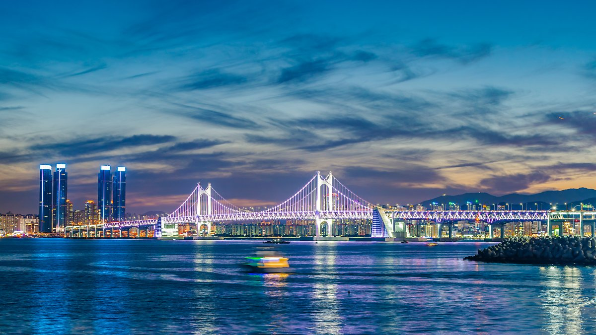

스컬&하하 (SKULL & HAHA) - 부산바캉스
설명이 필요없는 대한민국 제2 도시!
부산광역시는 대한민국 동남부 해안에 위치한 최대의 해양 물류 도시로 부산항을 중심으로 해상 무역과 물류 산업이 발달하였다.
이번엔 경부선의 종착역이다! 서울에서 기차를 타고 부산역에 내려보자!
산, 강, 바다, 해수욕장, 신도시, 공업지대를 모두 끼고 있는 거대 도시의 역동성을 몸소 느낄 수 있을 것이다.
거기에 맛있고 특징 강한 음식들은 더 이상 설명할 필요가 없다!
고민할 필요없이 이번 여름은 부산이다.
어디로 갈까?
#맛집투어
#해운대 #자갈치시장 #소양호 #춘천호
#중도선사유적지 #남이섬 #해맞이공원
